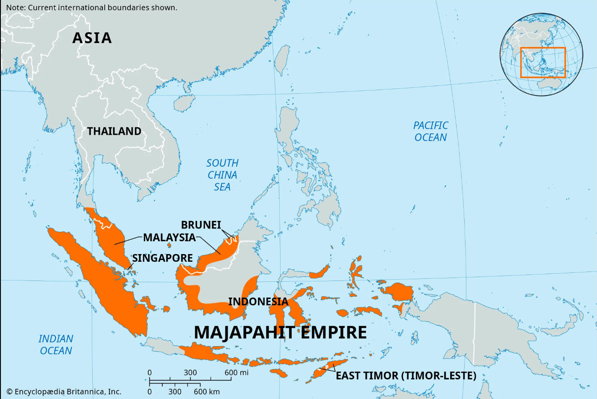

Majapahit Empire
Description
The Majapahit empire was the last of the major Hindu empires of the Malay archipelago and is considered one of the greatest states in Indonesian history.
Territory

List of Rulers
The following are the kings who ruled Majapahit from time to time.
- Raden Wijaya/Kertarajasa Jayawardhana (1293-1309)
- Kalagamet/Sri Jayanagara (1309-1328)
- Sri Gitarja/Tribhuwana Wijayatunggadewi (1328-1350)
- Hayam Wuruk/Sri Rajasanagara (1350-1389)
- Wikramawardhana (1389-1429)
- Suhita/Dyah Ayu Kencana Wungu (1429-1447)
- Kertawijaya/Brawijaya I (1447-1451)
- Rajasawardhana/Brawijaya II (1451-1453)
- Purwawisesa/Girishawardhana/Brawijaya III (1456-1466)
- Bhre Pandansalas/Suraprabhawa/Brawijaya IV (1466-1468)
- Bhre Kertabumi/Brawijaya V (1468 -1478)
- Girindrawardhana/Brawijaya VI (1478-1489)
- Patih Air/Brawijaya VII (1489-1527)
Majapahit Heritages
-
Mahapahit Heritage Inscription
- Wurare Inscription
- Kudadu Inscription
- Sukamerta Inscription
- Balawi Inscription
- Prapancasapura Inscription
- Parung Inscription
- Parung Inscription
- Canggu Inscription
- Biluluk Inscription
- Karang Bogem Inscription
- Katiden Inscription
- Majapahit Heritage Temple
- Tikus Temple
- Sukuh Temple
- Bajang Ratu Temple
- Wringin Lawang Temple
- Jabung Temple
- Brahu Temple
- Pari Temple
- Surawana Temple
- Wringin Branjang Temple
- Minak Jinggo Temple
- Rimbi Temple
- Kedaton Ngetos Village Temple